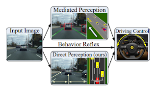

Sürücüsüz Arabalar, Derin Öğrenme
Derin yapay sinir aglari her turlu fonksiyonu temsil edebilirse, ve araba kullanirken insanlarin karar mekanizmasi da boyle bir fonksiyonsa, bir DYSA bu hesap mekanizmasini ornek veriye bakarak bulamaz mi? Egitim verisi yol goruntusu, etiket pedal, direksiyon kontrolu olur, DYSA egitiriz, abrakadabra araba otomatik olarak kullanilmaya baslanir. Surada comma.ai diye bir sirketin kurucusu bu tur bir seyden bahsediyor, genc heyecanli bir arkadas ama buyuk bir ihtimalle yanlis yolda.
Suradaki makale de yanlisligin nerede oldugunu soyluyor. Goruntu ile direksiyon arasinda birebir iliski yok. Bunu tespit ettigimiz anda zaten DYSA'nin niye bu sekilde kullanilamayacagini anliyoruz. YSA fonksiyonlari yaklasik temsil eder demistik. Foksiyon nedir? Matematigin temeli sayi teorisi, sayi teorisinin temeli kume teorisi ise, fonksiyonlarin kumelere dayali tarifini hatirlamak iyi olur, fonksiyon kumeler arasinda coka-bir (many-to-one), ya da bire-bire (one-to-one) esleme yapan bir seydir. Fakat goruntu / direksiyon eslemesi bu tanima uymuyor. Diyelim bir yonu uc seritli olan yolda orta seritte gidiyorum, onumde bir araba var. Bu arabayi soldan gecebilirim, sagdan gecebilirim, yani ayni goruntu iki farkli direksiyon kontrolune eslesmis olur. Egitim verisinde bu tur durumlar muhakkak olacaktir ve DYSA buradan optimal bir sinir agi cikartamayabilir. Daha basit bir ornek, f(x,y)=x+y fonksiyonu, f(3,2)=5 olabilir, f(4,1)=5 olabilir (coka-bir) fakat f(4,1) bazen 5 bazen 15 olamaz. Fakat yine de yeterince veriyle pek cok sartta isleyen bir YSA egitebilirsiniz muhakkak, ama ortaya cikan surucusuz araba ne kadar optimal isler, her turlu ortamda ne kadar guvenilir olur?
Paylastigimiz makale farkli bir secenek veriyor. Yol goruntusunu (input image) kontrol mekanizmasi (driving control) ile degil, arabanin diger arabalara olan mesafesiyle (direct perception) ile esliyorlar. Bu veri farkli sekillerde gelmesi daha zor olan bir veri, birebir esleme olusturmak icin daha uygun.
Mesafeler elde edildikten sonra isin araba kullanma kismi, gaz, direksiyon kontrolu daha kolay hale gelir, o kisim artik elle kodlanmis bazi kurallarla bile halledilebilir.
